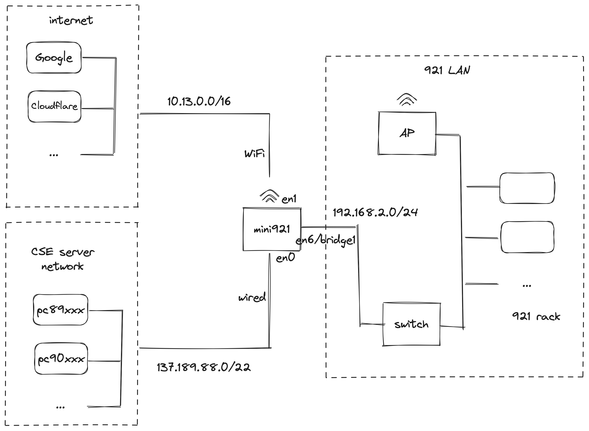

Mac Mini as a Router (DHCP server)
We want to realize a topology like this: 
DHCP server is actully shipped with macOS, that's why we choose mac mini.
But it only has one RJ45, we need an additional NIC.
In our case, we have a gigabit AX88179A NIC, it's en6 in our system.
And en0 is the included wired connection, en1 is the Wi-Fi.
We created a bridge with en6, its now bridge1.
We setup the DHCP server via System Settings->General->Sharing->Internet Sharing.
And configure bridge1 to have a maunal static IP of 192.168.2.1.
And it needs to know about servers on the CSE intranet,
so an additional DNS of 137.189.91.114 should also be set.
The configuration is stored in:
/etc/bootpd.plist
<?xml version="1.0" encoding="UTF-8"?>
<!DOCTYPE plist PUBLIC "-//Apple//DTD PLIST 1.0//EN" "http://www.apple.com/DTDs/PropertyList-1.0.dtd">
<plist version="1.0">
<dict>
<key>Subnets</key>
<array>
<dict>
<key>_creator</key>
<string>com.apple.NetworkSharing</string>
<key>allocate</key>
<true/>
<key>dhcp_domain_name_server</key>
<array>
<string>192.168.2.1</string>
<string>137.189.91.114</string>
</array>
<key>dhcp_router</key>
<string>192.168.2.1</string>
<key>interface</key>
<string>bridge1</string>
<key>lease_max</key>
<integer>86400</integer>
<key>lease_min</key>
<integer>86400</integer>
<key>name</key>
<string>192.168.2/24</string>
<key>net_address</key>
<string>192.168.2.0</string>
<key>net_mask</key>
<string>255.255.255.0</string>
<key>net_range</key>
<array>
<string>192.168.2.2</string>
<string>192.168.2.254</string>
</array>
</dict>
</array>
<key>bootp_enabled</key>
<false/>
<key>detect_other_dhcp_server</key>
<array>
<string>bridge1</string>
</array>
<key>dhcp_enabled</key>
<array>
<string>bridge1</string>
</array>
<key>dhcp_ignore_client_identifier</key>
<true/>
<key>ignore_allow_deny</key>
<array>
<string>bridge1</string>
</array>
<key>use_server_config_for_dhcp_options</key>
<false/>
</dict>
</plist>
One thing to notice is that we have to manually add 137.189.91.114 to the DNS section.
Currently this is a bug, I have no idea why bootpd wouldn't pickup the DNS server from
where the network is shared.
Internet access in 921 network
After the steps above, we alreadly have access to CSE network if we add route for CSE on every server in 921. However, adding routes does not work for Internet. We have to revert to NAT.
macOS actually also has built-in support for pf,
as in the most famous firewall solution pfSense.
Here, I couldn't find much easily approachable materials
(long and boring documentation doesn't count).
So, I choose a GUI for pf which is Murus.
After adding a NAT rule from bridge1 (LAN) to en1 and en0 (WAN),
we now have full access to both CSE intranet and Internet.
If you feel more comfortable with just pfctl,
the rule used here is:
nat on en1 from bridge1:network to any -> (en1)
nat on en0 from bridge1:network to any -> (en0)
Access from anywhere via cloudflare tunnel
To enable this feature, you need:
- A cloudflare account
- A domain name
# Login to cloudflare
cloudflared login
# create a new tunnel
cloudflared tunnel create mini921
# create a DNS record, i.e. a sub-domain name, for the SSH service
cloudflared tunnel route dns mini921 mini921-ssh.jlhu.io
# same thing for HTTP service
cloudflared tunnel route dns mini921 mini921.jlhu.io
cat << EOF | tee ~/.cloudflared/config.yml
cat ~/.cloudflared/config.yml
tunnel: mini921
credentials-file: /Users/mass/.cloudflared/<YOUR-CRED-UUID>.json
ingress:
- hostname: mini921.jlhu.io
service: http://localhost:80
- hostname: mini921-ssh.jlhu.io
service: ssh://localhost:22
- service: http_status:404
EOF
# SSH service (remote login) could be enabled in system preferences
# Start the default apache server shipped with macOS
sudo apachectl start
# Install cloudflared as service so that it starts after reboot
sudo mkdir -p /etc/cloudflared
sudo cp ~/.cloudflared/config.yml /etc/cloudflared/
cat << EOF | sudo tee /Library/LaunchDaemons/com.cloudflare.cloudflared.plist
<?xml version="1.0" encoding="UTF-8"?>
<!DOCTYPE plist PUBLIC "-//Apple//DTD PLIST 1.0//EN" "http://www.apple.com/DTDs/PropertyList-1.0.dtd">
<plist version="1.0">
<dict>
<key>Label</key>
<string>com.cloudflare.cloudflared</string>
<key>ProgramArguments</key>
<array>
<string>/opt/homebrew/bin/cloudflared</string>
<string>tunnel</string>
<string>run</string>
</array>
<key>RunAtLoad</key>
<true/>
<key>StandardOutPath</key>
<string>/Library/Logs/com.cloudflare.cloudflared.out.log</string>
<key>StandardErrorPath</key>
<string>/Library/Logs/com.cloudflare.cloudflared.err.log</string>
<key>KeepAlive</key>
<dict>
<key>SuccessfulExit</key>
<false/>
</dict>
<key>ThrottleInterval</key>
<integer>5</integer>
</dict>
</plist>
EOF
sudo launchctl load -w /Library/LaunchDaemons/com.cloudflare.cloudflared.plist
# Enable the service
sudo launchctl start com.cloudflare.cloudflared
# Check its status
sudo launchctl print system/com.cloudflare.cloudflared
# Watch if the server has started correctly
tail -F /Library/Logs/com.cloudflare.cloudflared.err.log